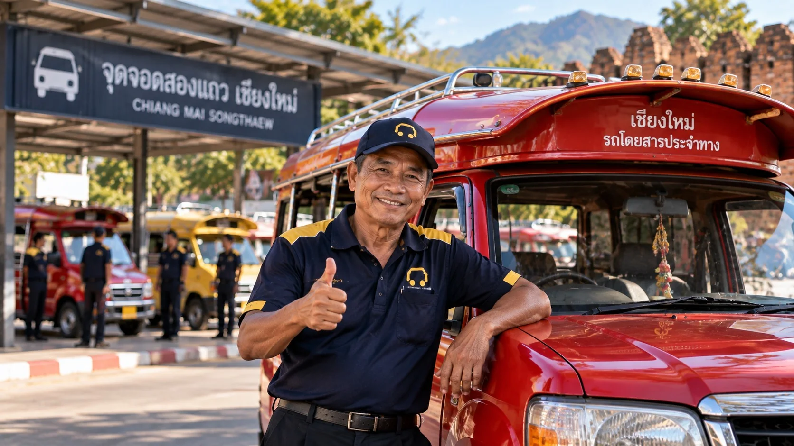

งานเพิ่มขึ้น โดยไม่ต้องทิ้งสหกรณ์ของคุณ
voyiro รับเฉพาะคนขับรถสาธารณะที่ถูกกฎหมาย และสมัครผ่านสหกรณ์ต้นสังกัด เราไม่นำรถส่วนตัวมาแข่งกับคุณ
ออกแบบมาเพื่อคนขับรถสาธารณะไทยโดยเฉพาะ
งานจากโรงแรมและทัวร์
ได้ผู้โดยสารจากโรงแรม บริษัททัวร์ และร้านอาหารพาร์ตเนอร์ ที่ปกติคุณเข้าไม่ถึง
รู้รายได้ก่อนรับงาน
การ์ดงานแสดงเงินที่คุณได้รับก่อนกดรับทุกครั้ง ไม่มีค่าสมัคร
สหกรณ์ดูแลคุณ
สหกรณ์ต้นสังกัดเป็นผู้อนุมัติและดูแลสมาชิก มีปัญหาคุยกับคนที่รู้จักคุณ
ใช้ง่ายผ่าน LINE
รับงานผ่าน LINE ที่ใช้อยู่แล้ว ไม่ต้องเรียนระบบยาก
ผู้โดยสารยืนยันตัวตน
รู้จุดรับ จุดส่ง และราคาก่อนรับงาน ไม่ต้องต่อรองหรือทะเลาะเรื่องราคา
ถูกกฎหมายตั้งแต่วันแรก
ตั้งแต่ 31 มี.ค. 2569 คนขับที่รับงานผ่านแอปต้องมีใบขับขี่สาธารณะ และมีเส้นตายการปฏิบัติตามวันที่ 30 ก.ย. 2569 voyiro รับเฉพาะคนขับที่มีใบอนุญาตอยู่แล้ว
ใครสมัครได้
- เป็นสมาชิกสหกรณ์เดินรถที่ร่วมกับ voyiro
- มีใบอนุญาตขับรถสาธารณะหรือเอกสารประจำตัวผู้ขับขี่ตามประเภทรถที่ยังไม่หมดอายุ
- รถจดทะเบียนถูกต้องตามประเภท และ พ.ร.บ. กับภาษีไม่ขาด
- สหกรณ์ต้นสังกัดรับรองความเป็นสมาชิกและตรวจเอกสารก่อนเข้าระบบ
- มีสมาร์ตโฟนที่ใช้ LINE ได้
สิ่งที่ต้องเตรียม
| เอกสาร | หมายเหตุ |
|---|---|
| บัตรประชาชน | ตัวจริง ถ่ายเซลฟี่คู่บัตร |
| ใบอนุญาตขับรถสาธารณะ | ตามประเภทรถ ยังไม่หมดอายุ |
| สำเนาทะเบียนรถ | หน้ารายการจดทะเบียน |
| หนังสือรับรองสมาชิกสหกรณ์ | สหกรณ์ออกให้ |
| หน้าสมุดบัญชีธนาคาร | ชื่อตรงกับบัตรประชาชน |
| รูปรถ 4 ด้าน | เห็นทะเบียนชัด |
สมัครผ่านสหกรณ์ของคุณ 5 ขั้นตอน
แจ้งสหกรณ์
บอกเจ้าหน้าที่สหกรณ์ว่าต้องการเข้าร่วม voyiro
ลงทะเบียนผ่าน LINE
กรอกข้อมูลและอัปโหลดเอกสารในลิงก์ที่สหกรณ์ส่งให้
สหกรณ์อนุมัติ
เจ้าหน้าที่ตรวจเอกสารและยืนยันความเป็นสมาชิก
อบรมและรับยูนิฟอร์ม
อบรมการใช้งานระบบ รับเสื้อยูนิฟอร์มและบัตรคนขับ
เริ่มรับงาน
เปิดสถานะพร้อมรับงาน ระบบส่งงานใกล้คุณทันที
สหกรณ์ของคุณยังไม่ได้ร่วมกับ voyiro? แนะนำ voyiro ให้สหกรณ์
รายได้ของคุณ เห็นเฉพาะคุณ
อัตรารายได้และค่าธรรมเนียมเป็นไปตามข้อตกลงระหว่างคนขับ สหกรณ์ต้นสังกัด และ voyiro ดูได้ในแอปคนขับหลังเข้าสู่ระบบ
เห็นเงินที่จะได้
การ์ดงานแสดงยอดที่คุณได้รับจากงานนั้นก่อนกดรับทุกครั้ง
สรุปยอดของคุณ
ดูเที่ยวที่วิ่งและยอดเงินของตัวเองในแอปคนขับ
เป็นของคนขับ
ทิปที่ผู้โดยสารให้เป็นของคนขับทั้งหมด
แจ้งล่วงหน้า
แจ้งผ่านสหกรณ์และในแอปก่อนมีผล และไม่มีผลกับงานที่รับไปแล้ว
ดูอัตราของคุณได้ที่ไหน
- เข้าสู่ระบบแอปคนขับด้วย LINE หรือทะเบียนรถ
- อัตราและเงื่อนไขที่คุณยอมรับ พร้อมวันที่มีผล อยู่ในแอป
- สงสัยยอดเงิน สอบถามเจ้าหน้าที่สหกรณ์ต้นสังกัดได้
การรับเงิน
- รอบการจ่ายและวิธีรับเงินแสดงในแอปคนขับ
- ทุกงานมีรายการให้ตรวจสอบย้อนหลังได้
- ไม่มีค่าสมัคร
สิ่งที่แอปคนขับทำให้คุณ
รับงานใกล้ตัว
ระบบส่งงานที่อยู่ใกล้คุณ ลดเวลารอและวิ่งรถเปล่า
ดูรายได้รายวัน
เห็นเที่ยวที่วิ่งและยอดเงินของแต่ละวันในที่เดียว
นำทางอัตโนมัติ
ระบบนำทางไปจุดรับและจุดส่งให้ทันทีที่รับงาน
สื่อสารกับผู้โดยสาร
ติดต่อผู้โดยสารผ่านระบบเพื่อนัดจุดรับให้ตรงกัน
ปุ่ม SOS
แจ้งเหตุฉุกเฉินระหว่างเดินทางได้จากในแอป

มาตรฐานเดียวกันทุกคัน ทุกจังหวัด
มาตรฐานนี้ปกป้องชื่อเสียงของคนขับทุกคนในระบบ
- แต่งยูนิฟอร์ม voyiro และติดบัตรคนขับขณะรับงาน มาตรฐานเดียวกันทุกภาคและทุกประเทศ
- สุ่มยืนยันตัวตนด้วยเซลฟี่ 2–5 ครั้งต่อวัน ห้ามให้ผู้อื่นใช้บัญชีแทน
- เก็บเงินตามราคาที่แสดงเท่านั้น ห้ามเรียกเก็บเพิ่ม
- ห้ามพาผู้โดยสารแวะร้านที่ผู้โดยสารไม่ได้ขอ
- ระบบเตือน 3 ครั้ง: ครั้งที่ 1 เตือน · ครั้งที่ 2 ระงับการรับงานชั่วคราว · ครั้งที่ 3 สหกรณ์พิจารณาร่วมกับ voyiro
คำถามจากคนขับ
ยังรับผู้โดยสารข้างทางได้ไหม
ได้ตามปกติ voyiro เป็นงานเพิ่ม ไม่บังคับให้รับผ่านระบบอย่างเดียว
ถ้าไม่ได้เป็นสมาชิกสหกรณ์ สมัครได้ไหม
ปัจจุบันรับเฉพาะผ่านสหกรณ์ที่เข้าร่วม เพื่อให้ทุกคนในระบบถูกกฎหมายและมีผู้ดูแล
ต้องขับวันละกี่ชั่วโมง
ไม่มีขั้นต่ำ เปิดรับงานเมื่อพร้อม
เกิดอุบัติเหตุระหว่างงานทำอย่างไร
กดปุ่ม SOS ในแอปเพื่อแจ้งเหตุ แล้วแจ้งสหกรณ์ต้นสังกัดและทีม voyiro ที่ 081-960-3227 (จันทร์–เสาร์ 9.00–17.00 น.) รถทุกคันต้องมี พ.ร.บ. ที่ยังไม่ขาดตามกฎหมาย ส่วนความคุ้มครองเพิ่มเติมสำหรับคนขับอยู่ระหว่างจัดทำ
ข้อมูลส่วนตัวของคนขับใครเห็นบ้าง
ผู้โดยสารเห็นชื่อคนขับ ทะเบียนรถ และรหัสคนขับก่อนขึ้นรถและระหว่างเที่ยว ข้อมูลส่วนบุคคลอื่นดูแลตามมาตรฐาน PDPA